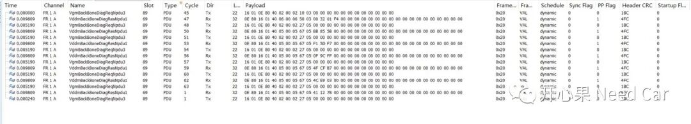
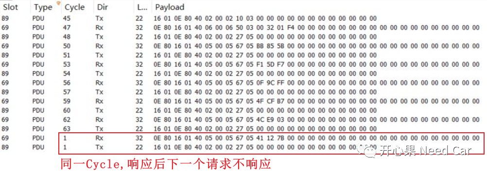
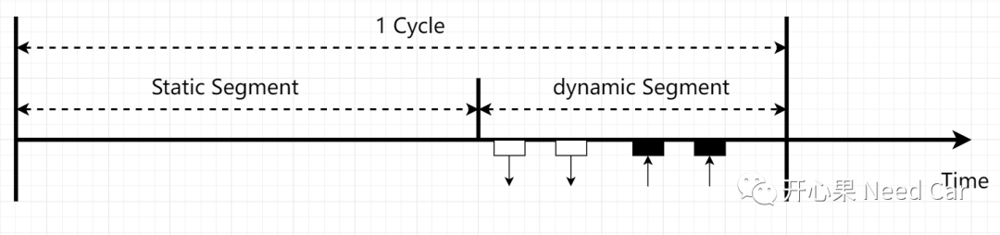
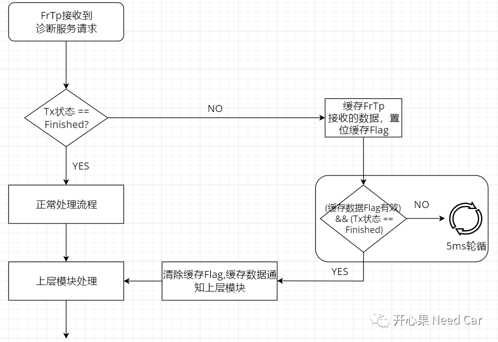

开心果 Need Car · 2022-03-05T08:04:00+08:00 · 微信原文
Uds诊断大家应该不陌生，相对于通信和网络管理，可以说诊断问题在工程开发中，暴露的最多。本文聊一下遇到的一个诊断问题：单帧偶发不响应。
提示：本文基于Flexray总线讨论，虽然该总线通用性不如Can，但是该问题带来的解决思路还值得一看，即开卷有益。
如下图，发送某个单帧的时候存在不响应的情况。进一步说：在同一个Cycle（5ms）内收到ECU上一服务请求的响应，紧接着请求下一个诊断服务时，ECU未响应请求服务。

放大Payload部分，最后一个$27服务的种子（Seed）请求没有响应。

首先，我们先解读一下同一个Cycle中，ECU是否可以响应上一帧诊断服务请求的同时再接收下一帧服务请求。
注意：该Flexray问题使用了一个物理Channel，没有使用备份Channel。
对于Flexray，诊断报文在动态段接收和发送，接收和发送均对应多个Slot，对于ECU，设置的发送Slot在接收Slot之前，如下所示：

既然一个Cycle内发送Slot在接收Slot之前，所以在同一个Cycle内，ECU可以先响应上一帧诊断请求，再接收上位机发送的下一帧诊断服务请求。
既然分析的层面讲清楚了这个工况的可能性，但是为什么ECU在同一个Cycle内没有响应下一帧的诊断请求呢？
在Flexray的FrTp层，发送一帧报文后（即响应诊断请求），FrTp层的状态切换到发送状态，直到底层反馈发送状态以后才会切换到下一状态(发送完成状态)，状态切换以后才会释放此通道使用的对象句柄（主要是占用着收/发共用的buffer缓冲区）。
方法一
方法二
方法三

综上述：单帧偶发不响应的根本原因是FrTp层响应上一帧请求后，状态在同一个Cycle内没有完成状态切换，导致同一Cycle内接收的下一诊断请求得不到资源所致。所以，在该类问题的解决时需要考虑接收数据如何被有效接收和通知上层。
最后
对Autosar/嵌入式感兴趣，进群聊，7天有效！
往期精彩回顾